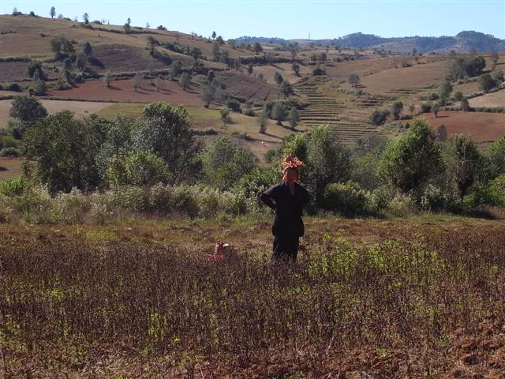

～死人 Golen Lily～
Eastern Paradise Motel 的傳統早餐有 Sticky Rice 糯米飯，用葉包住煮，裏面有一半是黑糯米，中間夾著一些豆。
吃飽早餐退房，然後行去隔籬街的 Golden Lily，把大件行李放下，他們會幫我運到目的地旅館。
臨出發，突然有位哥哥把一張十美元給我，我問為什麼，他笑說：「Refund~」然後指著一部 Van，說有人和我同車。
直到此時，我仍未覺得 Golden Lily 有什麼問題，更覺得很好添。但我實在太天真了。
一上去 Van 仔，上面坐著一家四口的西方人，大家互相問好，然後開車了，原來他們也是從香港來的，夫婦二人在港住了八年了，都在國際學校教書。
女的親切和藹，名叫 Christy，她問我是不是和他們一起行山，我想了想，回答不是，因為昨天 Golden Lily 負責人才說沒有其他人行二天一夜的，所以心想她們一定是行三天的了。
怎料坐在前面的 Guide，卻說我是和他們一起行，二天一夜，全程也在一起。
這時我只覺得很不妥，但一時間又想不到如何不妥，車已離開 Kalaw，Christy 她們繼續和我談話，我心不在焉，接著我跟那個 Guide 說我要他打電話給 Golden Lily，我要回水。
我又問 Christy 她們知不知道會多一個人，她們說知道的，Golden Lily 之前有問過她們，說會多一兩個人，又說這個行山團她們一早訂好。
起碼可以肯定，Golden Lily 昨天跟我說只有我一人行二天一夜是謊話，騙我付了全包的費用。
我向 Christy 說出我所想，但她們一家是在香港國際學校教書的富貴老外，是來窮國狂使錢的，以及不想生事，還打圓場替 Golden Lily 說話，說應該只是誤會，應該不是全心騙我之類。
到達 Trekking 的起點 Lamaing，那導遊說沒電話，要到終點才有得打，我心想我估到時又扮唔記得或又沒電話的了。
心情真的不是很好，加上要和這一家四口行，過程沒什麼癮。
他們說來自英國，但我覺得他們行為像美國人加香港人的混合。Christy 其實是個很好的人，只是她的老公 Chris，是個自大狂，我記得數年前去印度認識的荷蘭人說過，做老師的有時候在生活中也不自覺地做著老師，Chris 完全就是這樣，加上他乃一家之主，這人給我的感覺要比一些中國人還傳統，常常有他說沒別人說，他說的就是道理。
早上的草地上還有些水露，路不難行，平坦廣闊。原來這導遊就是 Harri Singh，Lonely Planet 中有提及，我心想這家人一早就預訂好的，更可能指定要這導遊。這程 Trekking 舒適（路勁易走）豪華（勁多食物吃剩勁多），他們勁飲水勁買膠水樽，還要驚死唔夠飲一人手執一支 1 Lite 水。
我和 Harri 其實這兩天只用一至兩 Lite 水，看見他們還用手拿著水來行，行到索晒氣，都嘖嘖稱奇。還有就是，我們都穿長袖衫褲來防曬，他們就短衫短褲狂塗 Sun Block Cream。
其實這次 Trekking 的風景算很美麗，雖沒有壯觀的山谷，但有遼闊草原，途中經過的田地，黃昏時上小山坡遇上一群群的牛和人在運貨，這些景色都很好看。
中午時經過一間小學，Harri 說這小學是義工建造和維持的，裏面的老師是從城市來義教的。村子滿地曬著 Chilli，很香。在另一條小村的木屋中吃午飯，吃完午飯不知在乾等什麼，Chris 四人竟在午睡。
這時才知道，原來是等候另外兩個西方人加入。那麼 Golden Lily 對 Christy 說的會加多一兩個人其實是這兩位，根本不是我，這樣子他們就暗中加人蒙混過關。
中途加入的 Barry 和 Helen 因為班機延後遲到 Heho，趕不及早上九時集合，坐電單車趕來這裏。他們都是英國人，人十分好，我很喜歡他們，Barry 在柬埔寨工作，做環境保護，Helen 不久之前在緬甸義教。他們都喜歡觀鳥，途中經常拿著望遠鏡。
晚上我們在一座 monastery 留宿，這裏住著大大小小的僧人，我們到達時剛巧他們在大堂靜修，我們靜靜地經過大堂，大堂的柱上，掛著昂山素姬的父親昂山將軍的照片，我們把行李放在睡覺的地方，Chris 郤如暴龍般如常在木地板大聲踏步，一點尊重都不會。
晚餐超多食物，大家奇怪為何這裏有肉供應，Harri 解釋僧人不一定吃素。傾談中 Chris 說到在港生活八年，但一句廣東話也不懂，又說兩個女兒現在要學中文，十分困難，問我是如何學中文的。
我卻說其實我們也不是有什麼特別方法，只是由於我們要用，用便會懂，不需要用的話，如何也不懂。就像他們在港八年也不懂中文，是因為他們根本不需要，在香港只懂英文不會死，他們滿足自己的生活圈子，不需要懂。
飯後一家四口累了離座，只淨 Harri、Barry、Helen 和我四人傾計，感覺良好，越來越冷，在 Kalaw 的 fair trade 店買的頸巾有用了。
打直排的月曆
Sticky Rice 和油炸鬼？
Eastern Paradise Motel

滿地 chilli